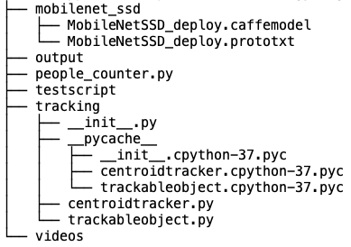

This is a brief introduction of part of my work while working as Research Assistant in REIP project in NYU Center for Urban Science and Progress (CUSP), supervised by Dr. Charlie Mydlarz and Dr. Juan Bello.
As we know, video data can occupy large amount of sensor storage if stored locally, but transmitting back to the server is limited by bandwidth and network condition. Codec can be used to reduce the size, but at some point it starts to have negative effect on video quality, thus limit our ability to perform further analysis like machine learning experiments, typically object detection to obtain useful information.
The object detection pipeline here is a demo built in the process of testing the optimal video codec setting between data compression and analysis capacity. We built a people counter based on this wonderful post to intuitively reflect the analysis capacity. This pipeline could detect people in the footage, as well as tracking their position and counting the total number. The structure on our pipeline is shown as follows:

The tracking directory contains the centroid tracking algorithm, while mobilenet_ssd has the Caffe framework for SSD in order to achieve the ability of real-time detection. The source code can be viewed here. As you can see from the demo below, compression does damage the accuracy of object detection.

Object Detection with SSD on Security Footage under Lossy Compression
Build a People Counter in Compressed Videos: SSD for Detection and Centroid Tracking Algorithm